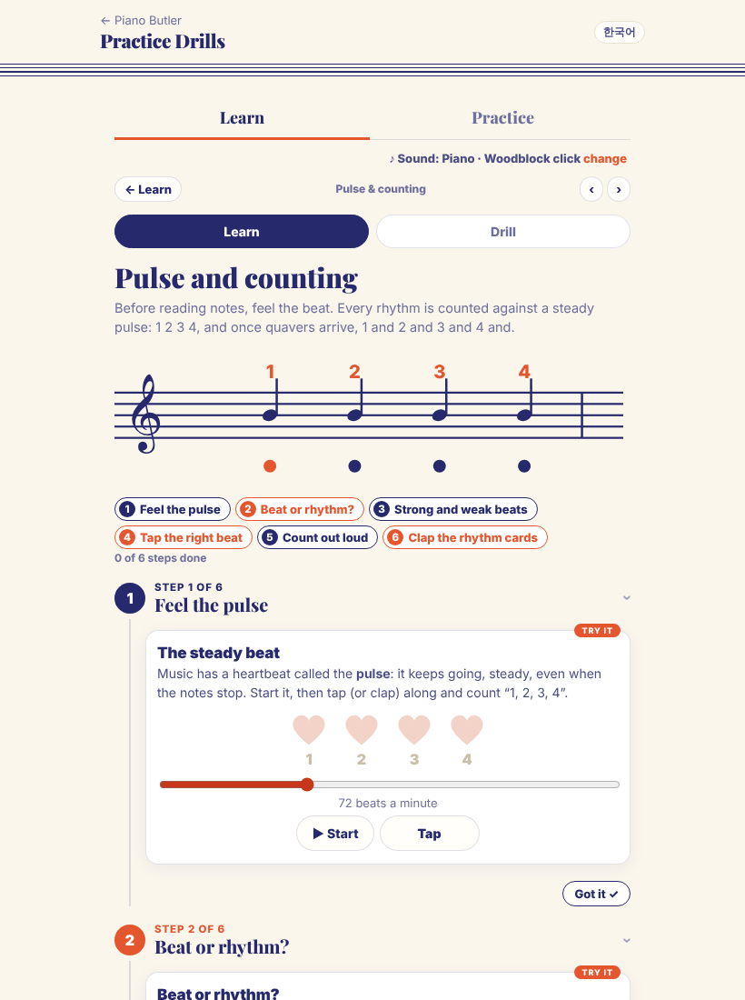
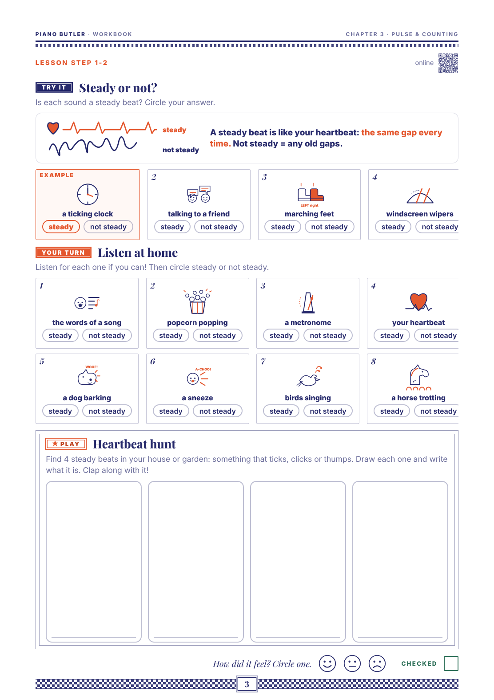
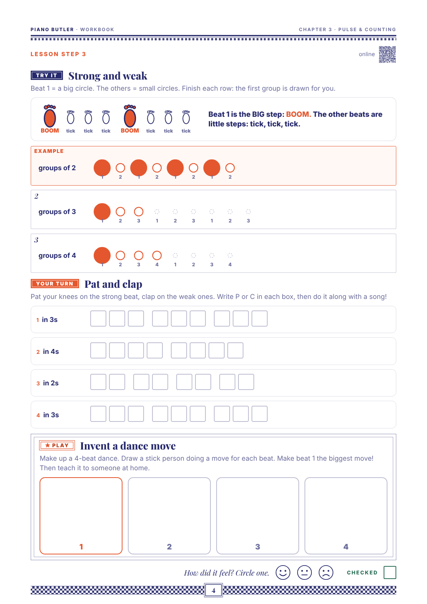

Built on your own words for the pulse: "Music has a heartbeat: the pulse. It keeps going, steady, even when the notes stop." It keeps to the level plan's scope for room 3 (a steady beat, counting out loud, the beat and the rhythm are not the same, with clapped words) and uses the cast of chapters 1 and 2: the sister and the brother, the small house and the big house, the bird, the turtle and the lighthouse. Chapter 3 comes before the letter names, so the keys are named by their house and the fingers by their numbers. It follows the Book rules: one idea per page, set tasks, nothing twice, and no "--".
AMEB: the pulse is practical work, with no paper question at Preliminary; it is the groundwork for 2/4 and 3/4 (Preliminary), which come with Time Signatures (room 8).
The draft, 7 pages: 1 the heart and its steady beat (opener) · 2 A steady beat: the same gap every time (footprints) · 3 Count out loud: 1 2 3 4, then back to 1 (the brother, a counting ring) · 4 When the notes stop: silent beats still count · 5 Beat or rhythm? bird and tur-tle over four beats · 6 The pulse in your fingers: a new finger on each beat, on the black-key houses · 7 My five checks.
How to answer: reply with codes, e.g. "B3 no, B7 yes, G3 none". The yellow marks in the draft (B3, B7) show the lines that wait for your answers.
When your students meet the pulse, what goes wrong most often? (My guesses: speeding up; stopping the count on a long note or a silence; clapping the words instead of the beat; counting in their head instead of out loud.)
Is there anything you always say or do for a steady beat in a lesson (a heartbeat, walking, a clock, a metronome) that the page should catch?
A tip for parents, or none, as for chapter 11?
A · what today's chapter 3 does · B · your decisions, each with my recommendation · the 7 draft pages · today's online lesson and Workbook, for comparison.
Today chapter 3 is an online lesson in six steps, a drill with 2 levels, and a Workbook and Teacher copy made before the Book rules. There is no Lesson Book yet.
The online lesson is cards and tools in six steps, not a Lesson Book on screen. After your OK it becomes the book on screen, like chapters 1, 2, 4, 6, 7, 11 and 15.
It teaches more than the pulse: strong and weak beats (room 8); crotchets, minims, dotted minims, semibreves and quavers with "1 and" (room 5); bars of 4/4 and rhythm cards (rooms 8 and 14); 2/4, 3/4 and 6/8 in "Tap the right beat" (room 8).
It has a song inside the chapter: "Hot Cross Buns". Your rule: no songs inside the chapters.
The drill does not test the pulse. Level 1 asks how many beats a note lasts; level 2 asks which bar you heard. Both need note values and bars first.
The Workbook and Teacher copy came before the Book rules: a map page, a drill page, a "Heartbeat hunt" (find and draw anything), a task with a song on the radio and "a friend's card", note-value and strong/weak pages, and a scored check-up.
The tempo readout "72 beats a minute" stays on screen as a setting; the book does not teach speed.
A separate reviewer checked every page in English and Korean against the scope and the Book rules. The scope held, the fingerings fit the houses, and the syllable splits were right. I applied these fixes from its list:
The pictures: your heart on the opener; the beat as a row of circles (as in the finger tunes of chapters 1 and 2); footprints for "steady". Recyes.
Words: "pulse" in the title and on the opener, "beat" everywhere else (for a beginner they are the same thing). Korean 박 for both. Recyes.
Speed: page 2 ends with "Then 8 more, slower, still steady." Speed belongs to Tempo (room 13), and "slower" right after "the gaps change = not steady" can confuse. Recno: take the line out, steady only.
Strong and weak beats (the 1 louder; pat on 1, clap the rest) move to Time Signatures (room 8), as the level plan says. Today's step 3 goes there. Recyes.
Counting here is only 1 2 3 4, round and round: no "and" (the quaver pair comes in room 5), no counting in 2s or 3s (2/4 and 3/4 come in room 8). Recyes.
Silent beats: page 4 says "silent beats still count", drawn as a dashed circle. No rest sign and no rest name yet (rests come in room 5). Recyes.
Beat or rhythm, with words from the cast: bird (one sound), tur-tle (two), light-house (two); Korean 새, 거-북, 등-대. It replaces "Hot Cross Buns". Other word sets are possible (fruit, names). Recyes.
Page 6: finger numbers in coral circles everywhere in this chapter; the count in white circles or plain numbers. Recyes.
The drill, 5 levels: 1 steady or not? (listen) · 2 tap along: 8 taps with the click, the app draws your gaps · 3 keep it going: the click stops after 4, tap 4 more alone · 4 count inside: count 1 2 3 4 and tap only on the beat it names (today's "Tap the right beat", 4 beats only) · 5 beat or rhythm? (words over a beat: tap the beat, not the words). Today's two levels move to rooms 5 and 8. Recthese 5.
Workbook ideas, set tasks a child does alone (built after the book): W1 steady or not: circle the footprint trails with the same gaps · W2 number the beats: write 1 2 3 4 in a long row of circles · W3 silent beats: write the count in every circle, colour the ones you play · W4 beat or rhythm: under printed words, one dot for each sound · W5 the finger beat: write the finger numbers for a set pattern over the count · last page: the check-up on paper. Recall six.
On screen (the book on screen, what moves): page 2 a steady click with a tap pad that draws your gaps; page 3 the counting ring lights up with the click; page 4 play and silent circles to tap; page 5 the words over a beat, tap the beat, then the words; page 6 tap the black keys with the count. Recyes.
The six steps today: feel the pulse; beat or rhythm ("Hot Cross Buns"); strong and weak beats; tap the right beat (2/4, 3/4, 4/4, 6/8); count out loud with note values; clap the rhythm cards. Below: the first step on screen, and two of today's Workbook pages.


